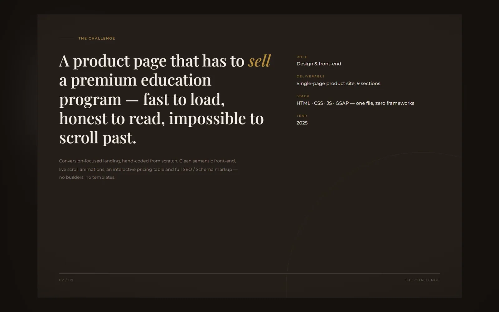
Launch landing page
The page a sales team closes on during a call
The company needed a landing page for its sales team fast — one they could screen-share on a call and drive to payment.
Open case
I build things that sell, with taste.
I'll build you a landing page or a system that sells — with the right message and striking design.
Discuss a task
The company needed a landing page for its sales team fast — one they could screen-share on a call and drive to payment.
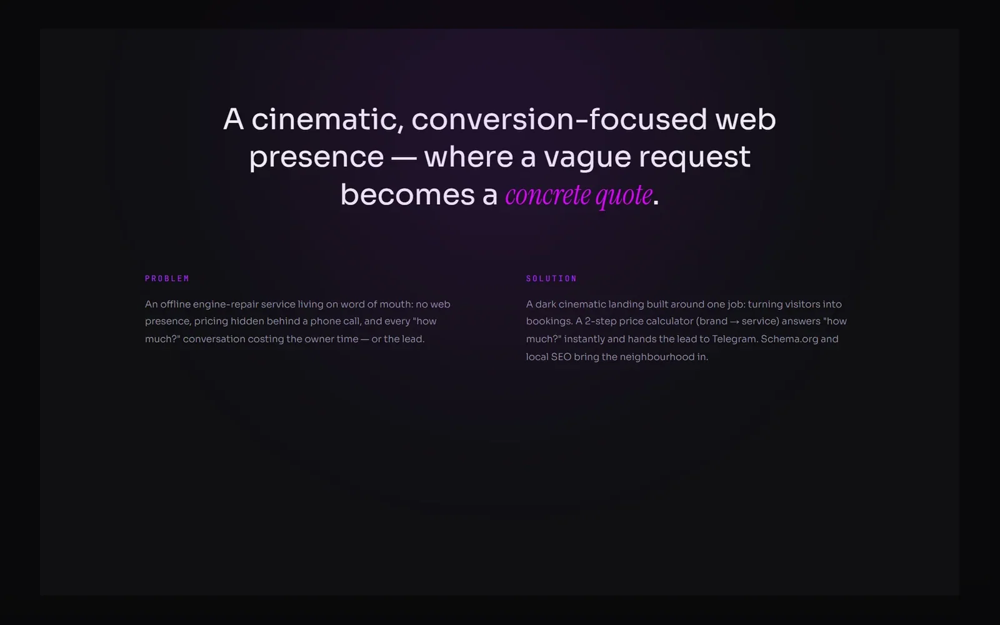
The owner wanted a site that does not overload the visitor: real services, a live price and a hand-off to Telegram, where he takes over.
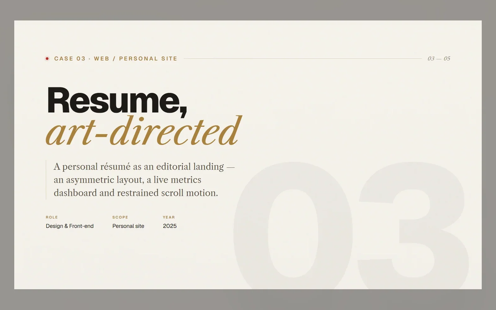
A friend asked for a page that would not look like the fortieth CV in the stack.
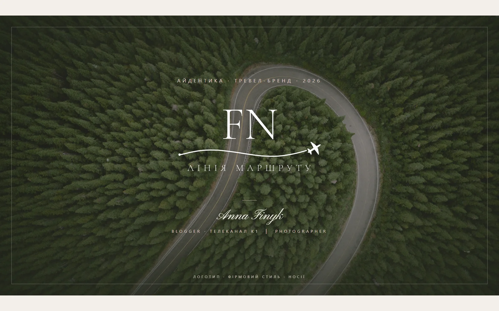
A travel-show host who also shoots photography. The identity had to fold two directions into one recognisable mark.
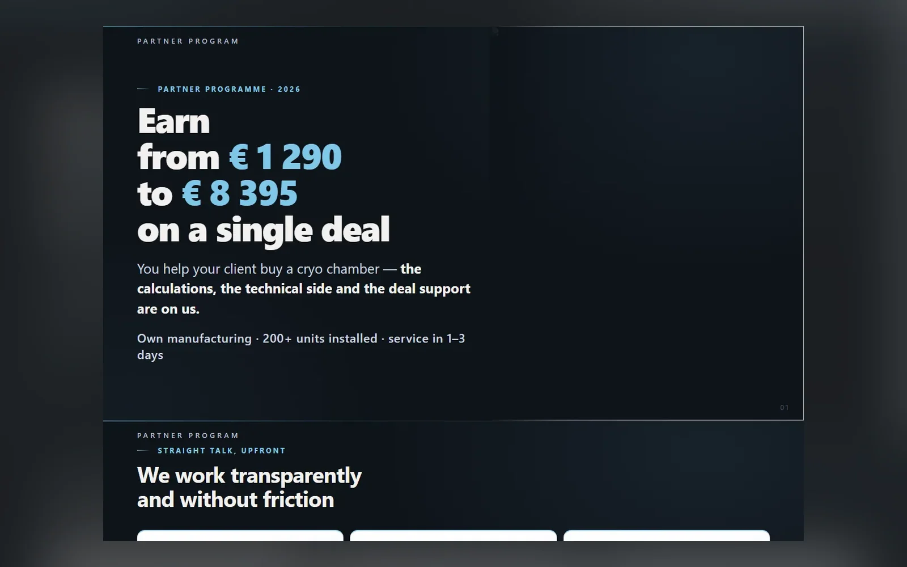
The job: show a partner how much a single deal earns them and why it is not hard to sell.
A brand film for an aesthetic medicine clinic: concept to final master.
The expert carried years of practice in his head, and the team went to ask him every single time. Half the working day went into finding an answer that had already been given before.
Several agents covering different areas: sales, tooling, finance, discipline. Each reads its own sources and files a report.
The channel runs without a dedicated social media manager: material is prepared in one place and lands in four.
Nine sections, interactive pricing, one file and no page builders.
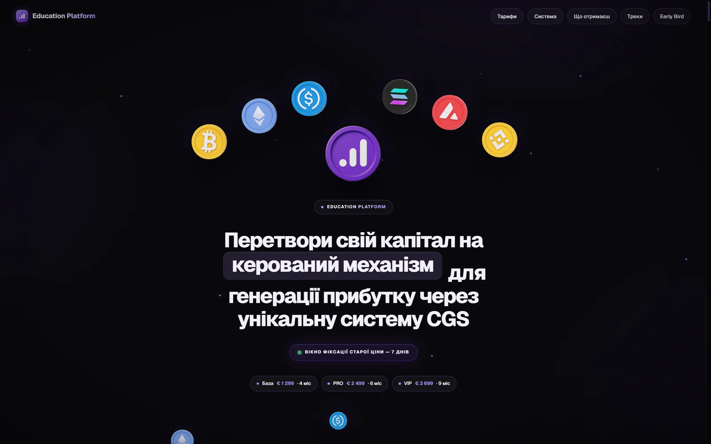
A two-step calculator, maps-ready markup, leads straight into Telegram.
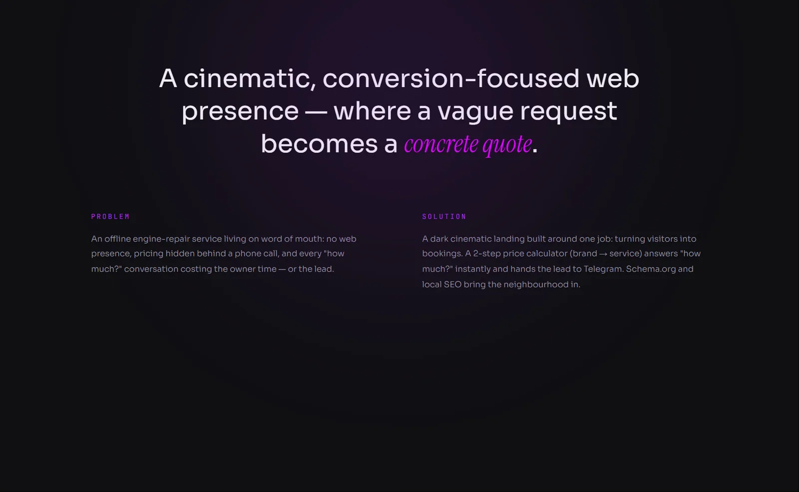
The partner sees the numbers and the answers to their doubts before the first call.
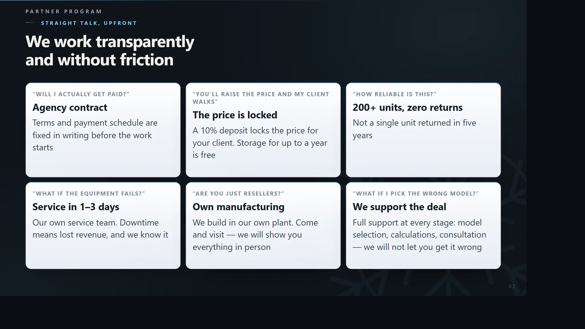
No account manager relaying your brief to a developer. You talk to me, and I am the one building it.
Not because I rush, but because I do not need to clear every step with a team of five.
I sold for several years myself, so I think about how a page brings a client in — not how it looks in a portfolio shot.
Nothing tied to a platform or a subscription. The files are yours and can be hosted anywhere.
Before handover I check it on the real URL: speed, mobile, behaviour after edits. Never “worked on my machine”.
One person on the whole project: no steps to clear with a team, no brief relayed through an account manager. Speed does not come out of quality — everything is tested on the live URL before handover.
It depends on scope. Describe the task and I will come back with a range the same day. Scope is fixed in writing so there is no argument later about what was included.
Some projects are under NDA. I show the work, not the client's data — yours will be treated the same way.
Revisions within the agreed scope are included. I show the logic of the page or system before building it — that is when changes are cheap.
Yes: brief, structure, design, code, testing, deploy. I can show the source files and build history for any case.
Task, goal, scope and the definition of done. Written down, so there is nothing to argue about later.
I show the logic of the page or system before building it — this is where changes are cheap.
I build and show progress rather than disappearing for a week.
Live run: speed, mobile, user paths. Revisions within the agreed scope are included.
Files, access, a short guide. Still reachable afterwards.
The company needed a landing page for its sales team fast — one they could screen-share on a call and drive to payment.
A sales team needed a launch page urgently: one they could show during a call and use to close. The product is complex, and explaining it in prose means losing the reader on the second screen.
A nine-section page. Animated tiles explain the product step by step instead of a wall of text. An interactive pricing table expands on click, so the salesperson opens the relevant tier live in conversation. A diagram shows how the mechanism works — that removes half the questions before they're asked.
All in a single HTML file, no builders and no frameworks: it loads fast, doesn't break on mobile, and doesn't depend on someone else's platform raising its price next quarter.
The first version of the pricing table opened every row at once — on a call the salesperson got lost in it himself. I rebuilt it as click-to-expand: one tier on screen at a time, comparison on request.
Scroll animations in the first build stuttered on phones because of heavy shadows. I replaced the shadows with gradients and moved block reveals onto an intersection observer — scrolling became smooth.
Before the official launch the page had already brought in around €30,000 in sales. The client team's verdict, word for word: "This is better than any landing we've ever had. Objectively."
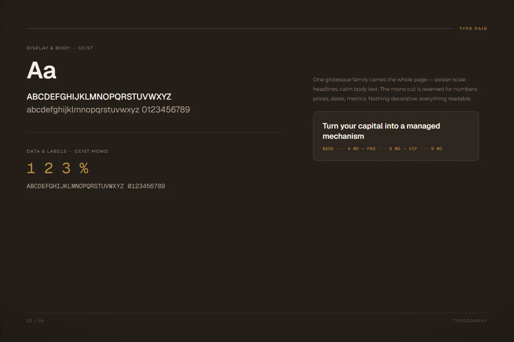
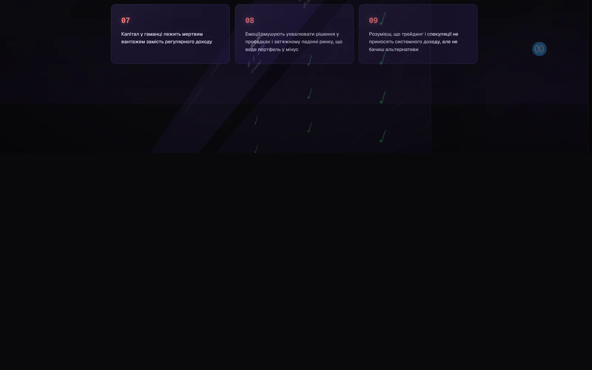
The owner wanted a site that does not overload the visitor: real services, a live price and a hand-off to Telegram, where he takes over.
The owner wanted a site that doesn't burden people with extra steps. The core pain: every conversation started with "how much will it cost", and answering that ate the time he could have spent working.
A two-step calculator: pick the component and the scope of work, and the price and timeline appear immediately. A vague enquiry turns into a concrete quote before the owner is even involved. The lead goes straight to Telegram — no call-back form, no waiting.
Schema.org markup and local SEO: the site is ready for maps and gets found by neighbourhood searches, instead of competing with chains on generic terms.
The first calculator returned an exact price — and that turned out to be a trap. For some jobs the cost depends on the condition of the part, which is only visible on a lift. An exact figure became a promise the shop couldn't keep. I rebuilt it as a range with an explicit note that the final number is confirmed after inspection.
The customer gets an answer to the main question in ten seconds and arrives already informed. The owner joins the conversation when the lead is warm, not when they're still asking about price.
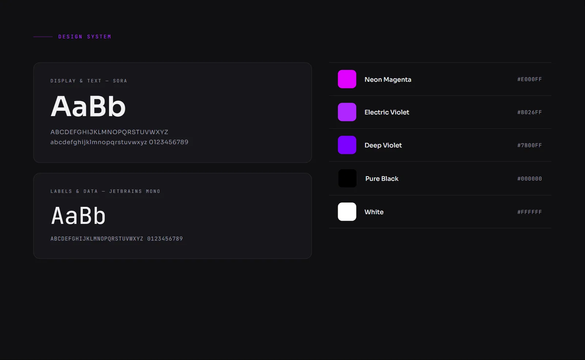

A friend asked for a page that would not look like the fortieth CV in the stack.
A page that doesn't look like the fortieth CV in the stack. The goal was never "make it pretty" — it was to get the link opened and read to the end.
Dark premium art direction: a neural-network background that reacts to the cursor, metrics that count up, buttons that pull toward the pointer. None of it is decoration — it holds attention past the first two seconds, and after that the content does the work.
The first version's animations killed phones: the background recalculated on every frame. I had to disable the heavy part on narrow screens and respect the system's "reduce motion" setting — otherwise the page irritates exactly the people it should accommodate.
The page lives at its own address and opens on a phone the same way it does on a laptop.
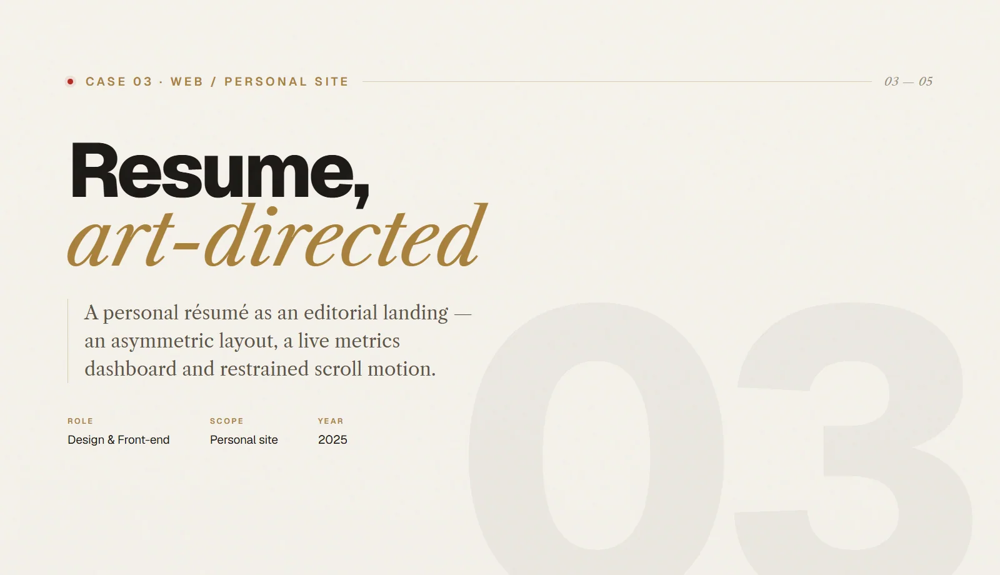
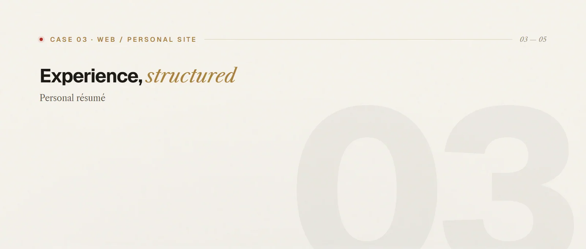
A travel-show host who also shoots photography. The identity had to fold two directions into one recognisable mark.
A travel show host and photographer. Two different directions that had to come together in one recognisable mark: shoots and self-designed routes. The requirement was simple to state and hard to execute — "it has to read both on an avatar and on a t-shirt".
An FN monogram and a route line ending in a plane: a path that continues. The line exists in two characters — solid for formal carriers, dotted for light ones — so the mark doesn't look equally flat everywhere.
The primary mark and its two characters, a four-colour palette, a type pair under an open licence cleared for commercial use, avatars and scaling rules from 1024 down to 32 pixels, and mockups — notebook, mug, phone case.
The first versions of the line fell apart at small sizes: at 32 pixels the plane turned into a smudge and the monogram fused together. The mark had to be redrawn not as a scaled-down copy but as a separate version with a simplified line — that's what keeps it recognisable on any carrier.
A finished brand package that works without a designer on call: files for every carrier, spacing rules, and a clear boundary for which character of the line belongs where.
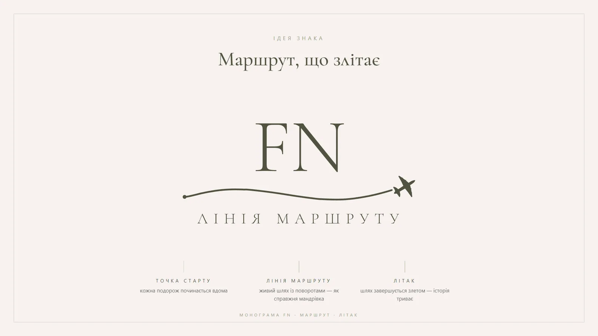
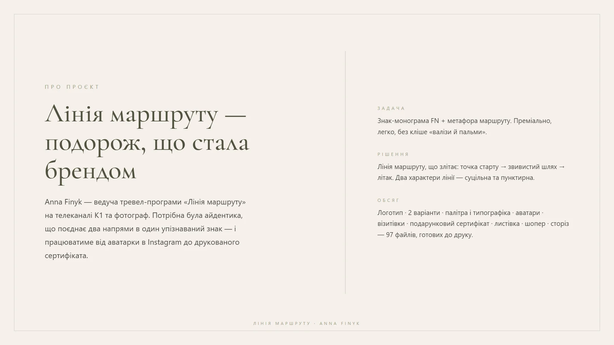
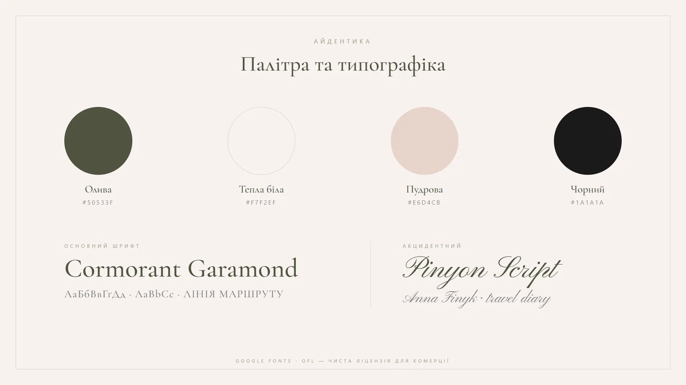
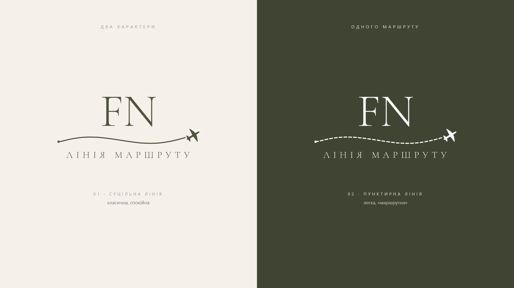
The job: show a partner how much a single deal earns them and why it is not hard to sell.
An equipment manufacturer was launching a partner programme. Partners needed two things explained: how much they earn on a single deal, and why it isn't hard to sell if you're not an engineer.
The first spread is money: the income range from one deal. Then the market in numbers, what exactly the partner receives, and how deal support works.
Objections are handled inside the layout: a dedicated block answers "will I actually get paid", "what if the equipment fails", "aren't you just resellers". That removes half the questions before the first call.
The first version compared equipment across a dozen parameters — partners drowned in them. I kept five that decisions are actually made on and moved them into a table that shows the difference rather than the spec sheet.
The deck can be sent with no covering note: it walks the partner from income to detail and ends on a clear next step.
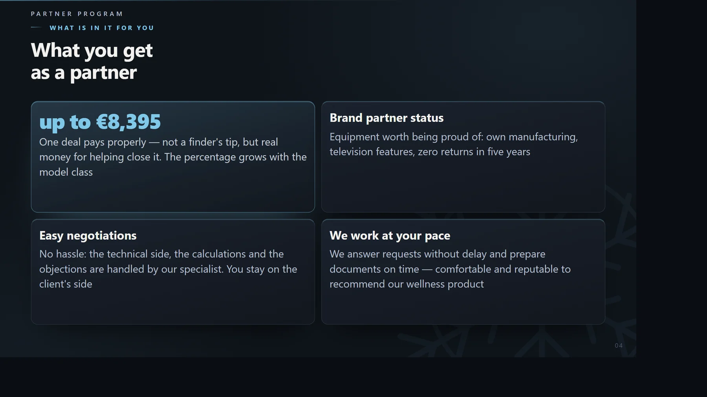
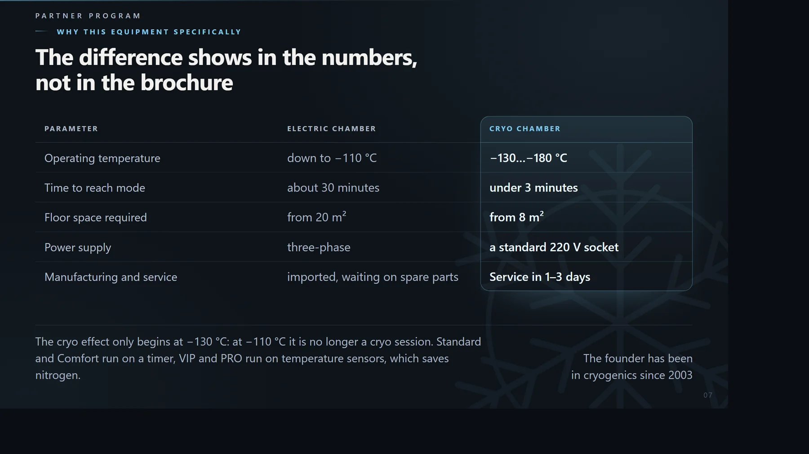
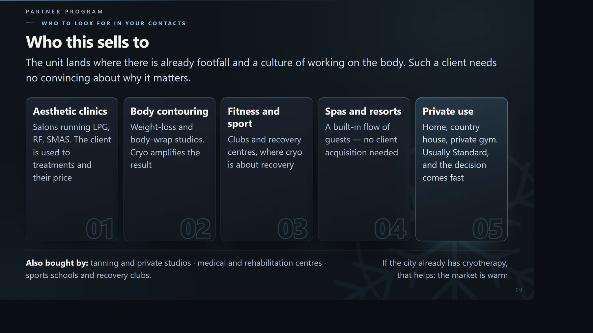
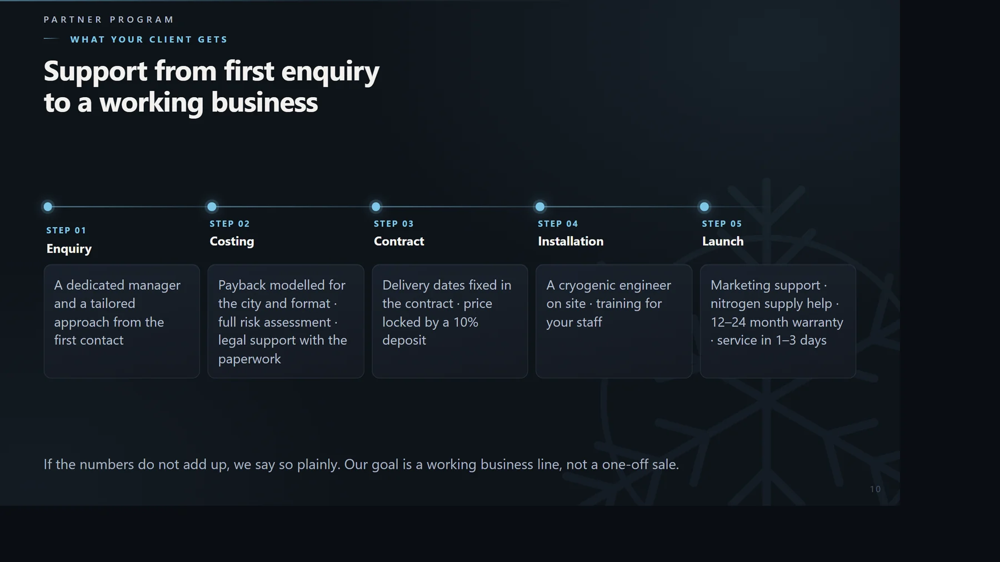
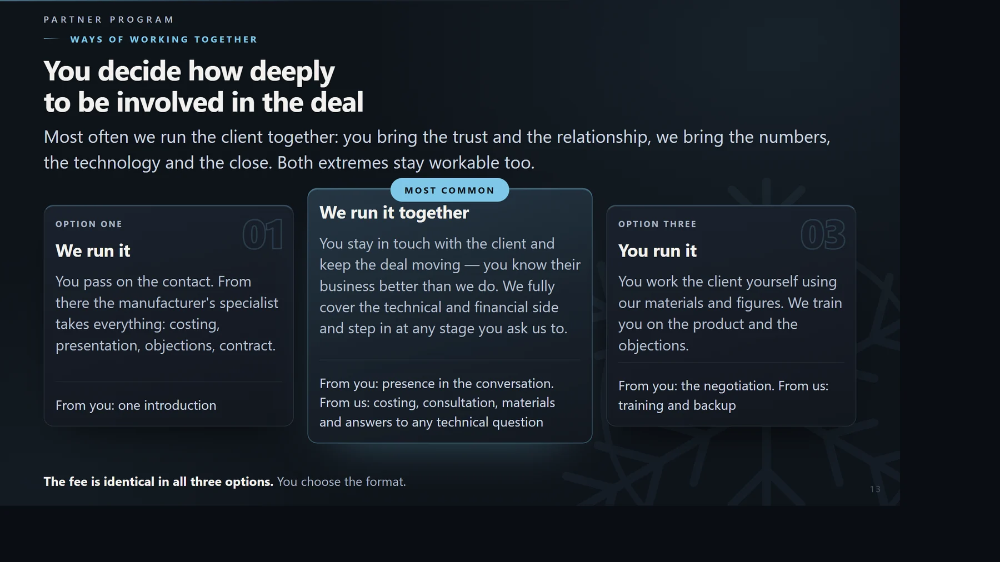
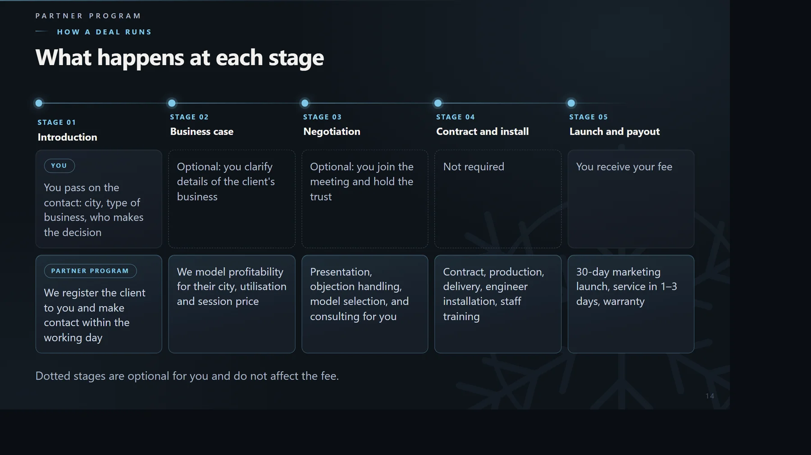
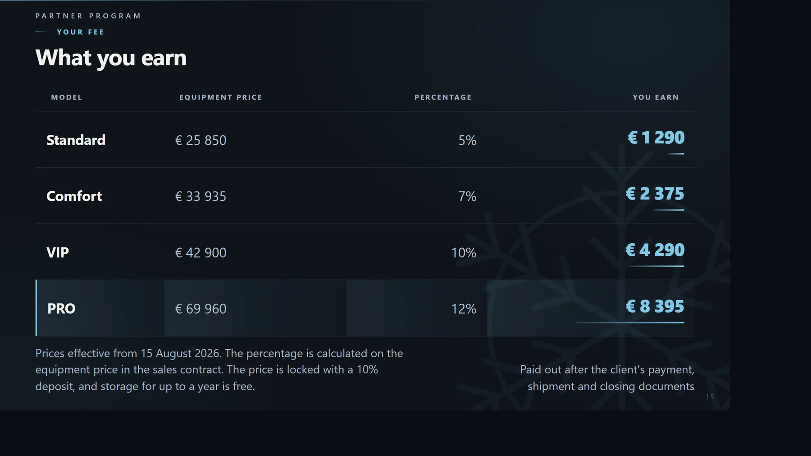
A brand film for an aesthetic medicine clinic: concept to final master.
A commercial for an aesthetic medicine clinic. Fifteen seconds to show character rather than list services.
Script, storyboard, frame-by-frame generation, edit and sound. Black-and-white cinema with a single colour accent: red appears exactly three times — soles, lips, final shot. That's precisely why it lands: any more red and the eye stops noticing it.
The lead's face was built from her real photographs, and that nearly killed the project: the model lost likeness between frames — her in one shot, someone else in the next. It had to be retrained from scratch, with a single set of reference frames held across the whole piece.
The second problem was motion. Generated frames drifted at the seams and the cuts gave away their origin. I solved it with editing rhythm: short takes and hard cuts where a long move would have fallen apart.
A finished master the clinic runs in its advertising. The lead is recognisable from the first frame, but looks the way she'd want to look.
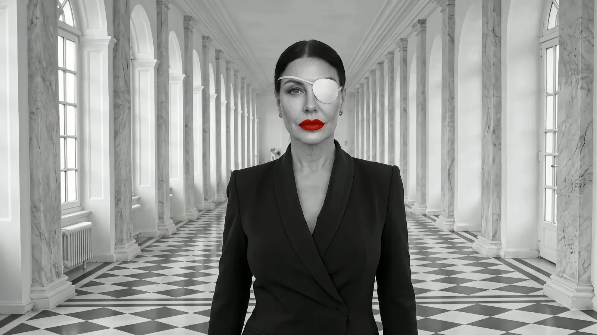
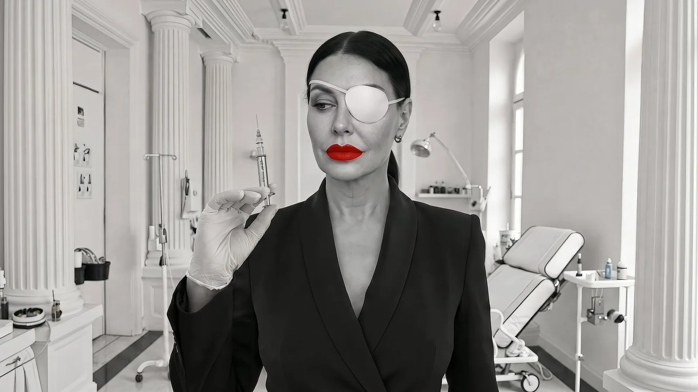
The expert carried years of practice in his head, and the team went to ask him every single time. Half the working day went into finding an answer that had already been given before.
The expert carried years of practice in his head. Every question from the team cost him time: he repeated out loud what he had already covered in dozens of meetings. Half of the department's working day went into finding an answer that had already been given somewhere in the company.
Meeting transcripts, deal reviews and years of correspondence went into a single knowledge base. A salesperson asks in the work chat and gets an answer in the expert's own words, with a reference to the specific review it came from.
Calls are transcribed locally, on my own machine. Client conversations never reach any cloud service — for a sales floor that was a condition, not a preference.
The first phone call transcript came back as twenty minutes of nonsense: the model locked onto the glossary prompt I had passed in "to improve quality" and repeated it instead of the speech. I caught it by reading the first lines of the output, then checked the signal level — the recording was fine. Removing the prompt and turning off both the silence filter and conditioning on previous text produced a clean transcript.
Then I tried to speed things up and ran three transcriptions in parallel — all three died on memory and the work had to be redone. A local model is bound by the RAM of one machine: running them in parallel doesn't accelerate anything, it wipes out every branch at once. I rebuilt it as a queue.
The third issue only appeared at volume: old archives were pushing current sales scripts out of the results. Technically the system answered correctly — but in last year's words. I rebuilt storage so that recency affects ranking.
Retrieval runs on keywords with recency ranking, without a vector database: at this volume it is more accurate and doesn't add infrastructure someone would have to maintain later. The model composes the answer strictly from retrieved fragments, with no filling in the gaps.
The result: the path from call to signed deal no longer depends on one person. The expert is needed where the decision is genuinely non-standard.
Several agents covering different areas: sales, tooling, finance, discipline. Each reads its own sources and files a report.
The working loop was scattered across chats: tasks, agreements, numbers and decisions lived in message threads, and by the end of the week nobody remembered what happened on Monday. I needed a system that collects this on its own and delivers a summary.
Several agents covering different areas — sales, tooling, finance, discipline. Each reads its own sources, files the material into the knowledge base and writes a scheduled report. None of them sends anything outward: they only read and file.
Today it is 90 modules, roughly 27,500 lines of code and 28 tests. It runs every day. It's also where I test what I later offer to clients: if a design can't handle my own load, there's nothing to show a client.
For four days straight the proactive messages silently stopped — reminders, alerts, scheduled reports. The bot still answered questions and looked alive: it went quiet only when it was supposed to speak first.
The cause was in how it started. The library only runs its initialisation hook inside its own standard loop, and my startup was assembled by hand — several bots in one process. The application reference stayed empty and the send function exited silently, without raising anything. The logs were clean.
A second failure of the same kind: if no bot came up at startup (say, the network wasn't ready after boot), the process hung forever with zero bots and told no one.
Initialisation is now called explicitly. The rule that came out of it matters more: a critical loop must either report itself at startup or fail loudly — a silent failure is more dangerous than a noisy one. An error in the log is found in minutes; inaction lives for four days. On a zero start the process now exits with an error and the watchdog restarts it within seconds.
I also added a throttle for proactive messages: an agent used to repeat the same alert every evening until it got a reply. Now each message type has a minimum interval it cannot fire more often than.
State lives in files with atomic writes and a lock per file — a crash mid-write leaves no corrupted data. Models switch between three providers with a fallback: one API going down doesn't take the loop with it.
The channel runs without a dedicated social media manager: material is prepared in one place and lands in four.
Run four platforms — Telegram, YouTube, TikTok, Instagram — with one person and no dedicated social media manager. And not turn it into posting for the sake of posting: the material has to come from real work.
Material is prepared in one place: real work becomes text and clips, then the system distributes it across platforms on a schedule. A return loop brings people back to Telegram, where the actual conversation happens.
The first version tried to prepare content for each platform separately — that doubled the work and stalled quickly. I rebuilt it around one source and a set of adaptation rules per format, instead of four independent streams.
The person handles substance, the system handles distribution and timing. The point isn't the number of posts: it removes the routine that usually kills channels.